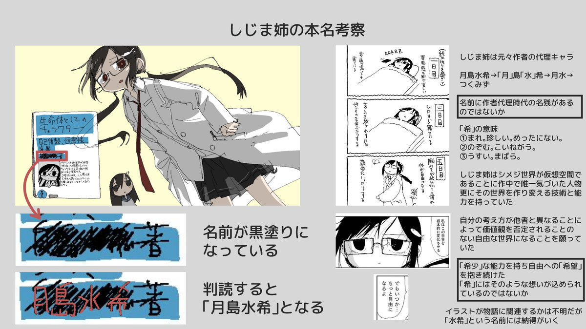

青空 しょな
@seikuushona
如果你不知道月島水希是谁的话。
顺带，《蘑菇的拟态日常》是神作。
（3 / 3）

青空 しょな
@seikuushona
4. 李文亚长期尝试推翻旧物理理论，月島水希则因证明理论而间接的导致原有的物理体系被推翻。
（真的编不下去了......）
5. 两人都没有同时出现过。
数字论证：水希 = みずき = 329 = (11-4)*(51-4)，文亚的笔画有 10 笔，-11/4+51/4。
Q.E.D.
（下续 2 / 3）
犬釘
@ainukugi
シメジシミュレーション に登場するしじまの姉
彼女の本名は連載開始から4年経った現在に至るまで作中では明かされていない
しかし2017年5月にTwitterへ上げられたイラストには、「月島水希」と読み取れる本名らしきものが描かれている
現在の物語に関連するかは不明だが、納得のいく名前である https://t.co/ju2TYaeWbK